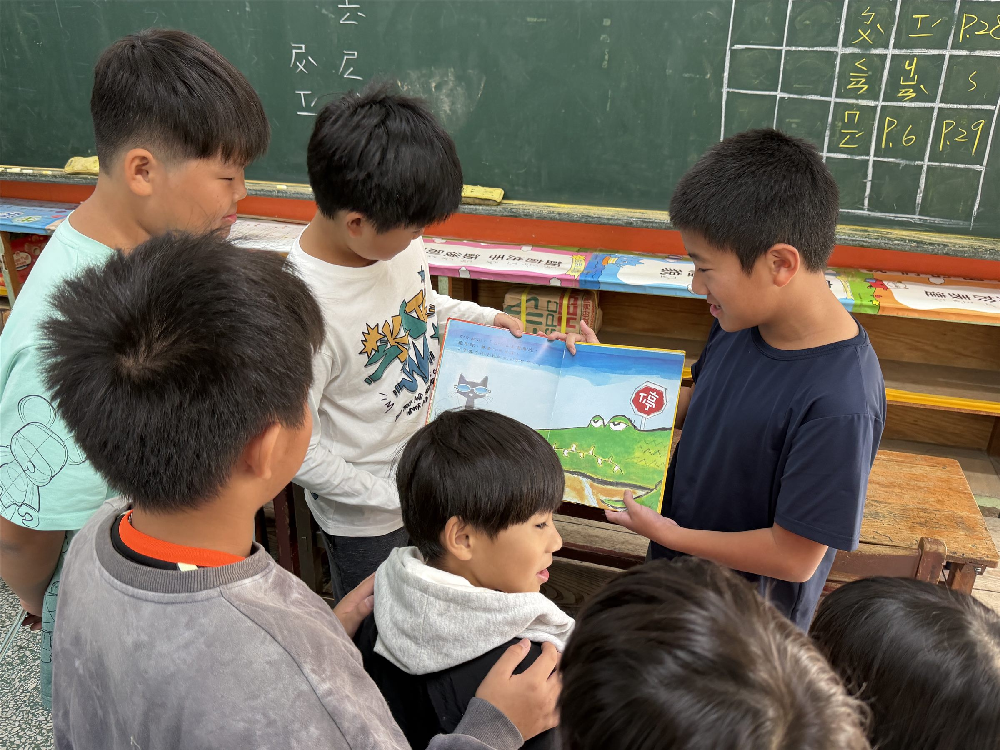
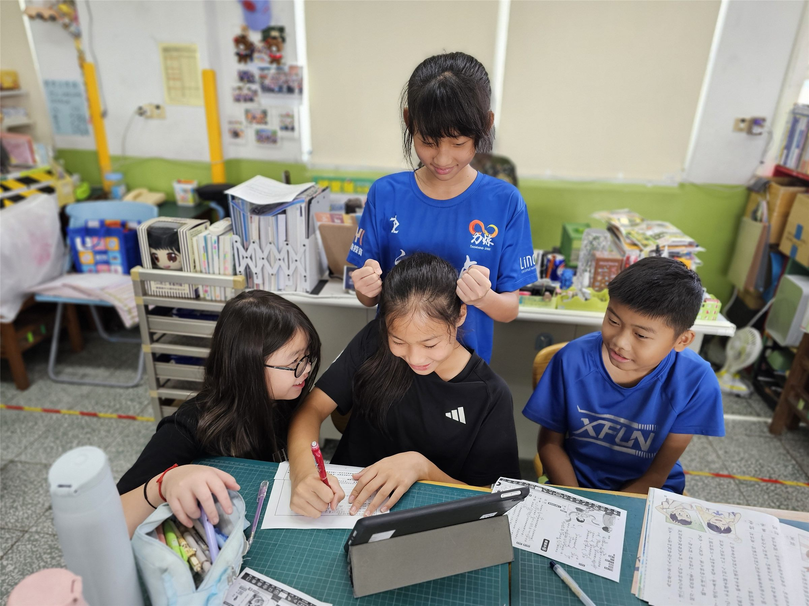
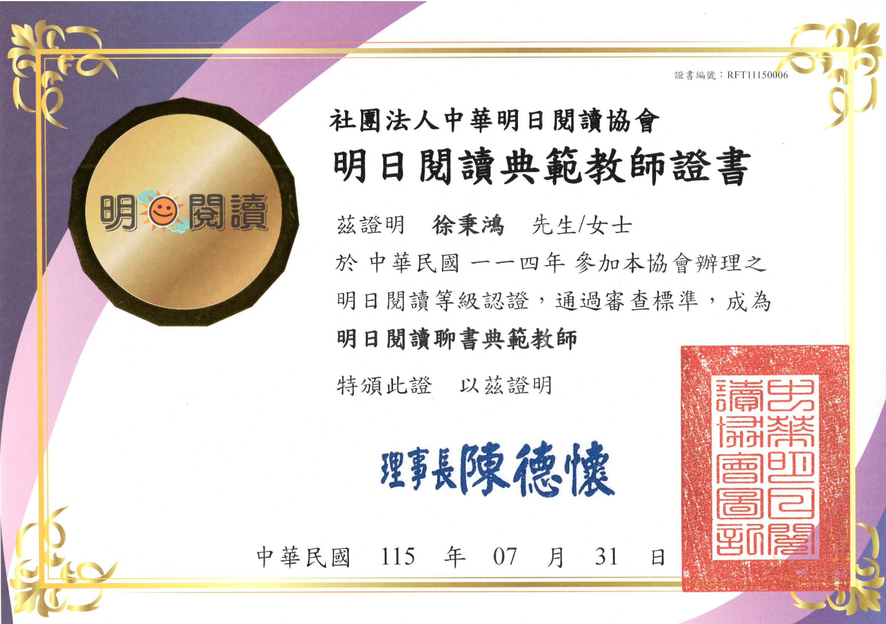
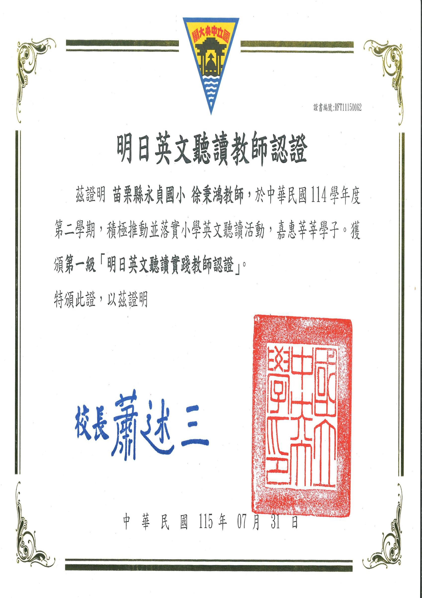

🏆 🎖️ 明日閱讀認證【聊書典範教師】·【明日英文聽讀教師】· 識字英雄榜全國前 20 名
圖書閱讀推動 × 適性化學習 × 行動研究
從晨讀 MSSR 到數位適性識字金銀島
永貞國小圖書館閱讀推動與科技化學習扶助教學實踐
📖 專題設計緣起與核心精神
徐秉鴻老師兼任永貞國小圖書館閱讀推動教師，積極導入中央大學『明日閱讀 MSSR』模式，以身教示範帶動全校沉浸式閱讀。同時結合高雄師範大學研發之『識字金銀島』平台，推動國小語文適性化教學與學習扶助，將課堂實踐轉化為兩篇全國學術研討會論文！
🌍 核心素養與聯合國永續指標 (SDGs) 對應
閱讀核心 1
身教式持續安靜閱讀 (MSSR)
全校每日晨讀，教師以身作則共同沉浸書海，建立閱讀習慣與自主學習動力。
閱讀核心 2
聊書典範與深層理解
引導學生從單純閱讀進階為深度討論，交流思辨觀點，獲中央大學聊書典範教師認證。
閱讀核心 3
識字金銀島數位診斷
精準診斷弱勢學童識字難點，提供適性化補救教學，大幅提升語文自信。
🧩 核心模組與教學實踐架構
面向一：全校晨讀 MSSR 與主題閱讀策展
全校性閱讀習慣奠定與情境營造
全面推行每日晨讀 15-20 分鐘，營造零壓力閱讀氛圍；規劃『世界書香日』、『主題書展』、『作家有約』與全校圖書館巡迴，讓閱讀成為孩子的生活常態。
面向二：識字金銀島線上適性教學與扶助
數位平台輔助與學習弱點即時反饋
應用國教署『國民中小學學生識字能力評估第四、五、六、七期計畫』與高師大方金雅教授研發之『識字金銀島』系統，結合部首、字形、字音、字義階梯診斷，指導學生自主闖關學習，顯著提昇語文識字量。
面向三：學術研究驗證與研討會論文口頭發表
教學實務與理論研究相長
先後於 2025 TALP 教育部自主學習節、2025/2026 PAIR 全國閱讀評量與教學研討會口頭發表 3 篇實踐論文，以嚴謹數據分析數位識字平台對學童學習成效與行為的正面影響。
面向四：永貞圖書館空間美學活化與 AI 輔助
校園閱讀空間優化與未來智慧圖書館
主責規劃 115 年永貞國小圖書館整修工程與空間環境改善案；並著手撰擬『如何利用 AI 協助國小閱讀推廣』先導實施計畫。
📸 教學現場紀實與成果照片（點擊放大檢視）
🔍 閱讀推動與明日說書人互動引導活動現場：師生生生互動對話聊書

🔍 班級身教式持續安靜閱讀 MSSR 實施現場：全班專注沉浸書海

🔍 中央大學明日閱讀認證－聊書典範教師證書

🔍 114學年度明日英文聽讀教師認證

🔍 學生榮獲識字金銀島全國英雄榜積分前20名